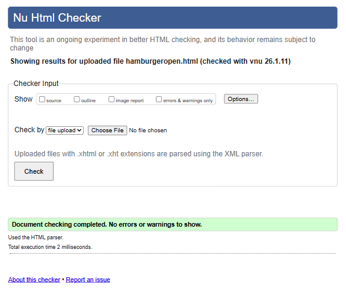
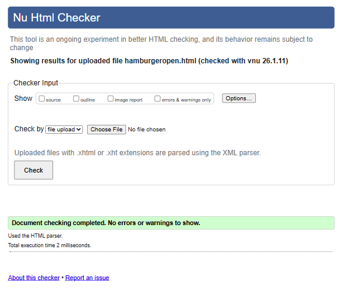

SITE REPORT
Reflective Discussion & Module Experience
The web development module has been a transformative and progressive journey, from visiting websites to actually creating one. Initially, understanding the structure of HTML5 seemed straightforward, but diving into the CSS styling made me realize the true depth of web design. One of the significant "ups" was the moment I successfully implemented the responsive grid system, seeing the layout adapt fluidly from desktop to mobile screens was incredibly satisfying.
However, the journey wasn't always an easy road. Debugging CSS specificity issues was a major challenge. I spent hours wondering why a style wasn't applying, and learned many things in the process. Learning to use the browser's Developer Tools was a turning point as it taught me to inspect elements and experiment with styles in real time. This module has taught me that patience and systematic debugging are just as important as writing code. The iterative process of coding, breaking, fixing, and refining has built my resilience and technical problem-solving skills.
Design Process & UI Decisions
Theme & Color Palette: I chose a dark, modern tailored theme (`#0f172a` background) paired with a vibrant sky-blue accent (`#38bdf8`) to create a professional modern aesthetic.
Glassmorphism: To add depth and a modern touch, I utilized "Glassmorphism" for cards and containers. By using semi-transparent backgrounds with `backdrop-filter: blur()`, I achieved a sleek looking design that looks premium and standard.
Typography: I selected the 'Inter' font family for its clean lines and excellent readability across different screen sizes. It complements the technical nature of the portfolio. The layout relies heavily on CSS Grid and Flexbox to ensure alignment and consistency. Furthermore, few other fonts were also used here and there for matching the respective contents.
Influences: The design was influenced by modern SaaS landing pages and dark-themed developer portfolios seen on platforms like Dribbble and Awwwards, where the use of glassmorphism and dark themes are trending.Furthermore, the design was also inspired by the Apple official website.
Validation & Testing
The code quality was a priority so all HTML and CSS files were validated using the W3C Validation Service. I addressed errors related to unclosed tags and missing alt attributes. The site was tested on various devices through the browser's developer tools.
HTML Validations
 Projects page
Projects page
 Video Demo page
Video Demo page
 Site Report page
Site Report page
 Contact page
Contact page
 Menu page

Menu page

CSS Validation

Video Demonstration
A comprehensive walkthrough of the website features, design decisions, and code structure can be viewed here:
https://www.youtube.com/watch?v=Bm5iA4Zupek
Watch on YouTube